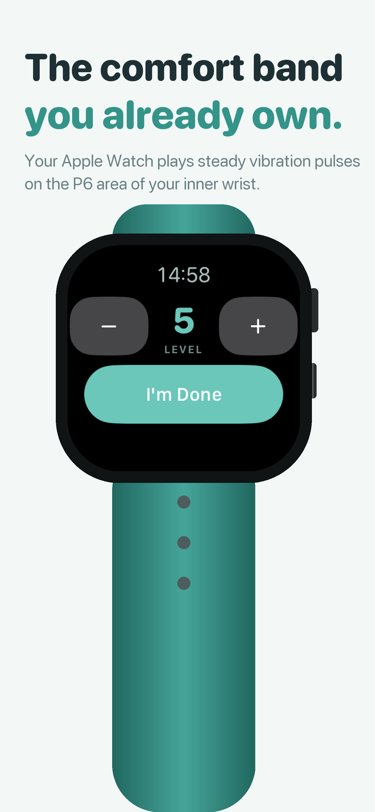
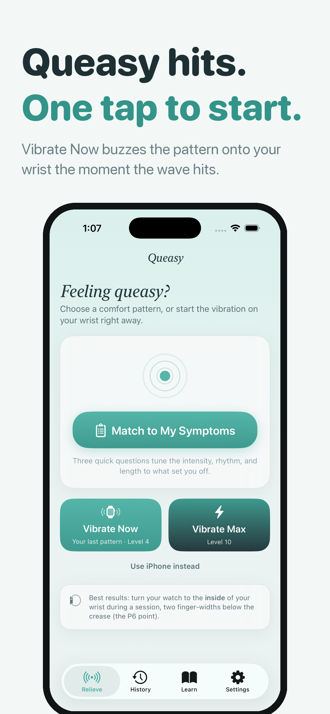
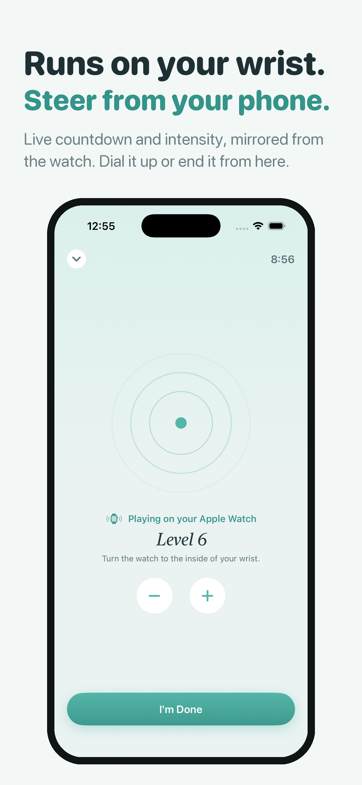
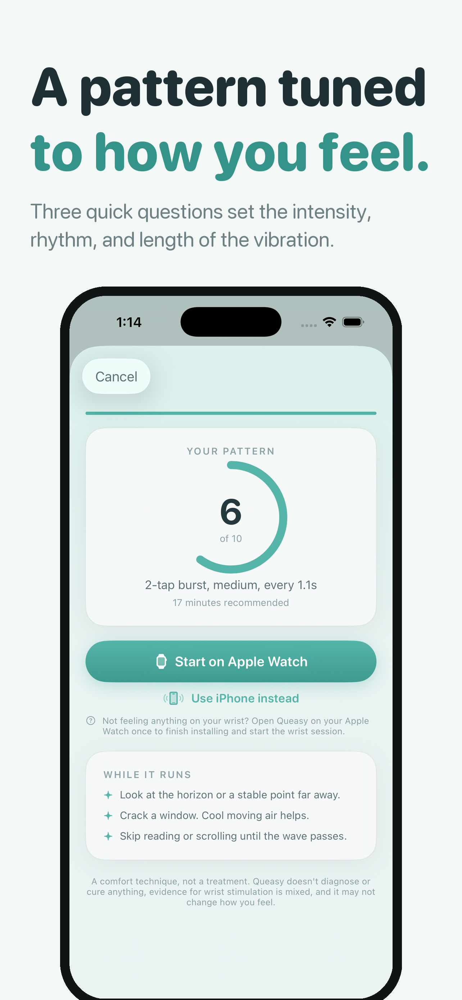
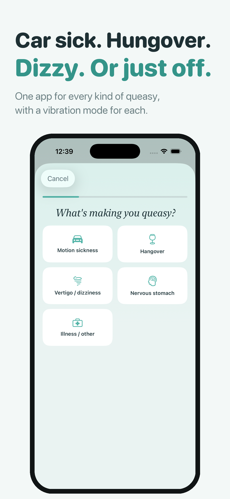
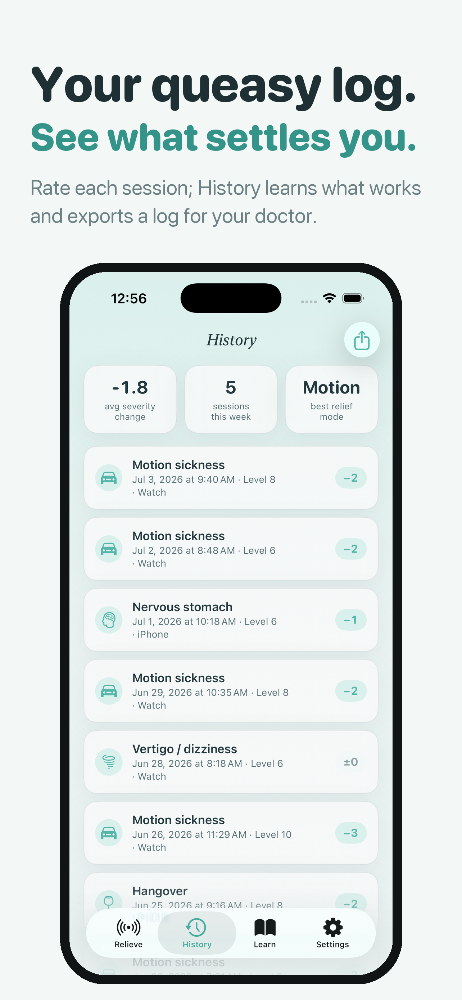

Calming vibration patterns on Apple Watch for queasy moments, with live intensity control and an iPhone fallback when the watch is at home.
Apple Watch · iPhone · Drug-free
Download on the App Store





Sessions on the wrist, control in your hand, history kept private.
Vibration sessions keep running with the display off, using watchOS extended runtime.
Reuse your last pattern, or fall back to a steady default when you don't want to think.
Pick an intensity, a rhythm, and a duration in a few taps before a session starts.
Turn the intensity up or down while it's running, without stopping and starting over.
Haptic sessions run on iPhone alone if you don't have an Apple Watch or aren't wearing it.
An optional 100 Hz tone for phone sessions, with headphones recommended.
An after-session check-in and private history so you can see which patterns you preferred.
The Learn tab cites its sources, including P6 acupressure background and the 100 Hz motion-sickness study.
Check-ins, sessions, and settings never leave your iPhone and Apple Watch. No account, no ads, no tracking.
Queasy has no account and no sign-up. Your check-ins, sessions, and settings stay on your iPhone and Apple Watch. There are no ads and no tracking. Apple processes purchases, and RevenueCat receives only the identifiers needed to unlock and restore Queasy Pro.
Privacy Policy →How it's built and why it matters.
Queasy moments arrive in the back seat, on a boat, or in a waiting room, and reaching for your phone is usually the last thing you want to do.
Queasy lives on your wrist instead. Start a session in a tap, let the vibration pattern run with the screen off, and adjust the intensity without looking. If the watch is at home, the same session runs as iPhone haptics with an optional low tone.
Queasy Pro unlocks the full session experience after onboarding. Monthly, yearly, or a one-time lifetime purchase is available, with a 1-week free trial on subscriptions. Prices are shown in the app before you buy and vary by region.
Pattern library. The full set of intensities, rhythms, and durations, rather than the default pattern alone.
Session history. After-session check-ins kept over time, so you can tell which patterns actually helped you.
Subscriptions renew unless cancelled at least 24 hours before the current period ends. Manage or cancel in App Store settings.
| Platform | iOS 17+, watchOS 10+ |
| Language | Swift 6 with strict concurrency |
| Framework | SwiftUI · WatchKit · Core Haptics · SwiftData |
| Data | No account; sessions stored on your devices |
| Storage | SwiftData, shared between iPhone and Watch via WatchConnectivity |
| Runtime | watchOS extended runtime for screen-off sessions |
Screen-off first. A comfort session you have to stare at is useless in a moving car, so extended runtime and wrist-down operation came before any UI polish.
Three taps, maximum. Nobody wants a questionnaire when they feel awful. The check-in is three questions, and Quick Start skips even those.
Honest framing. The app is a comfort aid, not a treatment. The Learn tab links its sources and says where the evidence is mixed.
Watch and phone parity. Every session type works without an Apple Watch, because plenty of people who get queasy don't own one.
Queasy is a drug-free comfort aid, not a medical device. It does not diagnose, treat, cure, prevent, or promise relief from any condition, and evidence for wrist stimulation and sound-based comfort techniques is mixed and varies by person. If nausea is severe or persistent, comes with other symptoms, or you can't keep fluids down, talk to a doctor.
On the App Store. Free trial on monthly and yearly plans.
Download on the App Store